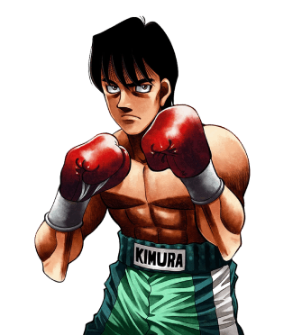

Opuesto a su amigo de toda la vida e inseparable compañero, Aoki Masaru, Kimura es algo más calmado y presumido. Se unió al Gimnasio Kamogawa tras ser derrotado por Takamura, junto a Aoki, con la promesa de algún ser tan fuertes como para golpearlo. Fue el protagonista de la ova Kimura vs. Mashiba (Round Extra), en la cual demostró su aptitud y esmero como boxeador al asustar a Mashiba con su resistencia y por haber podido ganar de no haber quedado inconsciente.